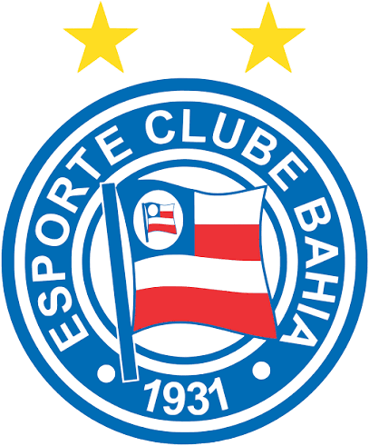

Uma paixão tricolor, uma história de família

O Bahia dela
Um clube que nasceu em Salvador, aprendeu a vencer pelo Brasil inteiro e virou parte da história de quem ama.
BBMP Bora Bahia Minha Porra
Entender por que ele é tão especialUm caminho de tantas gerações
A história do Esquadrão
O Bahia nasceu de gente que queria continuar jogando futebol. O que começou como a criação de um clube virou uma paixão que atravessa épocas, bairros e famílias.
-
A ideia ganha força
Em dezembro, ex-jogadores do Clube Bahiano de Tênis e da Associação Atlética da Bahia se reuniram em Salvador para imaginar um novo time.
-
Nasce o Esporte Clube Bahia
Fundado em 1º de janeiro, com o lema “Nascido para vencer”. Ainda naquele ano, conquistou seu primeiro Campeonato Baiano.
-
O primeiro campeão brasileiro
O Bahia venceu a Taça Brasil diante do Santos, no Maracanã, e se tornou o primeiro clube brasileiro a disputar a Libertadores.
-
Uma conquista para sempre
Com Bobô como um dos grandes nomes daquela campanha, o Tricolor venceu o Internacional na decisão e conquistou seu segundo Campeonato Brasileiro.
-
Um novo capítulo
O futebol do Bahia passou a ser administrado como SAF, com a entrada do City Football Group. A história do clube seguiu nas mãos de sua gente e de sua torcida.
-
Mais taças para a coleção
Em 2025, o Bahia conquistou pela quinta vez a Copa do Nordeste. Em 2026, chegou ao 52º título do Campeonato Baiano.
A alegria de levantar a taça
Títulos que contam a história
O futebol muda, os anos passam, mas cada conquista deixa um capítulo para a torcida guardar e contar de novo.
Brasil
Campeonato Brasileiro
2 vezes1959 · 1988Bahia
Campeonato Baiano
52 vezesO mais recente, em 2026Nordeste
Copa do Nordeste
5 vezes2001 · 2002 · 2017 · 2021 · 2025Norte e Nordeste
Torneio Norte-Nordeste
4 vezes1948 · 1959 · 1961 · 1963Bahia
Torneio Início do Estadual
8 vezes1931 · 1932 · 1934 · 1937 · 1938 · 1951 · 1964 · 1967Bahia
Taça Bernardo Martins Catharino
3 vezes1953 · 1954 · 1955Bahia
Taça Estado da Bahia
3 vezes2000 · 2002 · 2007Regional
Taça Bahia-Pernambuco
2 vezes1993 · 1994Bahia
Taça Otávio Mangabeira
1 vez1951Bahia
Taça Vivaldo Tavares
1 vez1955Internacional
Taça da Amizade
1 vez1959 · UruguaiBahia
Taça Walter Passos
1 vez1962Regional
Copa Renner
1 vez1997Bahia
Taça Maria Quitéria
1 vez1998Números referentes às principais conquistas do futebol masculino, conforme o registro oficial do clube, atualizado até 2026.
Nomes que viraram eternos
Ídolos tricolores
Alguns vestiram o manto em momentos decisivos. Outros fizeram história gol a gol, ano após ano. Todos ajudaram a construir o orgulho de ser Bahia.
Carlito
Maior artilheiro da história do Bahia, com 233 gols. Defendeu o Esquadrão entre 1949 e 1961 e marcou época também nos Ba-Vis.
Bobô
Camisa 8 e um dos grandes símbolos do time campeão brasileiro de 1988. Sua técnica e liderança apareceram nos momentos decisivos da campanha.
Douglas
Marcado por 184 gols e 456 jogos com o manto, foi uma das estrelas do heptacampeonato baiano consecutivo, conquistado de 1973 a 1979.
Baiaco
Volante histórico e dono do recorde de jogos pelo Bahia: 634 partidas nos levantamentos atuais. Também participou de todas as campanhas do heptacampeonato baiano.
Nonato
Atacante decisivo e um dos maiores goleadores tricolores, com 126 gols pelo clube. Foi campeão da Copa do Nordeste em 2001 e 2002.
Charles Fabian
Atacante de força e talento, foi peça importante no elenco campeão brasileiro de 1988. Marcou 64 gols com a camisa do Esquadrão.
Nadinho
Goleiro titular do Bahia campeão da Taça Brasil de 1959. No ano seguinte, integrou a equipe que se tornou o primeiro clube brasileiro a disputar a Libertadores.
Zé Carlos
Meia revelado pelo Bahia e artilheiro tricolor no Campeonato Brasileiro de 1988, com nove gols. Foi um dos destaques da conquista do bicampeonato nacional.
Uéslei
Um dos grandes atacantes tricolores dos anos 1990 e 2000. Fez 150 gols pelo Bahia e ocupa o quarto lugar na lista histórica de artilheiros do clube.
Uma arquibancada inteira em uma canção
O hino do Bahia
Criado em 1946 pelo professor e jornalista Adroaldo Ribeiro Costa, o hino nasceu para embalar a torcida. Até hoje, quando a arquibancada canta “Bahia! Bahia! Bahia!”, a canção parece juntar passado e presente numa só voz.
Também conhecido como o hino do Tricolor de Aço, ele virou símbolo do jeito vibrante de torcer.
A voz que toma conta da arquibancada
Músicas da torcida
Além do hino, existem cantos que viraram parte da memória tricolor — alguns puxam a festa, outros acompanham o time nos momentos decisivos.
Um canto para cantar junto
Sou Tricolor de Coração
Versão tricolor de “We Are Carnaval”, com a cara da torcida do Bahia.
Ouvir no YouTube
A campanha de 2010
Xalaialaia, Vamos Subir, Esquadrão
Um registro da festa tricolor em Pituaçu, na época do retorno à Série A.
Ouvir a arquibancada
Um segundo hino tricolor
Bahia Campeão dos Campeões
Canção de Zé Pretinho que Gilberto Gil regravou em ritmo de reggae.
Ouvir Gilberto Gil
Para conhecer outros cantos
Músicas da torcida do Bahia
Uma seleção de cantos tricolores para entrar no clima da Nação.
Ouvir a seleção
Mais do que onze em campo
O que faz o Bahia ser o Bahia
As cores da Bahia
O azul, o vermelho e o branco fazem do uniforme uma bandeira que se reconhece de longe.
O Super-Homem Tricolor
O mascote representa a força do Esquadrão de Aço. O desenho atual foi criado por Ziraldo em 1988.
A voz da torcida
Na Arena Fonte Nova, a paixão tricolor transforma cada jogo numa lembrança compartilhada por milhares de pessoas.
Mulheres de Aço e Pivetes de Aço
A história do clube também cresce com as equipes femininas e as categorias de base, formando novas gerações tricolores.
A parte que nenhum placar consegue explicar
Um amor que vem de longe — e também é só dela
“O Bahia? Porque sou tricolor desde criança. Já nasci tricolor, né? A família toda é tricolor; nossa família sempre se reunia para assistir aos jogos. Eu sempre vestia as camisas do meu pai para torcer!”
— Ela, sobre sua paixão pelo Bahia
O Bahia é especial porque guarda uma ponte muito bonita entre você e seu pai. A paixão pelo Esquadrão aproxima vocês: há um carinho que passa de uma geração para outra e que pode aparecer em cada jogo, em cada conversa sobre o time e em cada música cantada junto.
Mas essa história não termina aí. O Bahia também foi ganhando um lugar que é seu: nas suas emoções, no seu jeito de vibrar, na alegria das vitórias e até na esperança que continua mesmo quando o jogo aperta. O que começou como uma conexão com seu pai virou também uma paixão própria, feita das suas lembranças, da sua voz e do seu jeito de amar.
Por isso, quando você diz “Bahia”, não está falando só de futebol. Está falando de família, de pertencimento e de uma parte linda de quem você é.